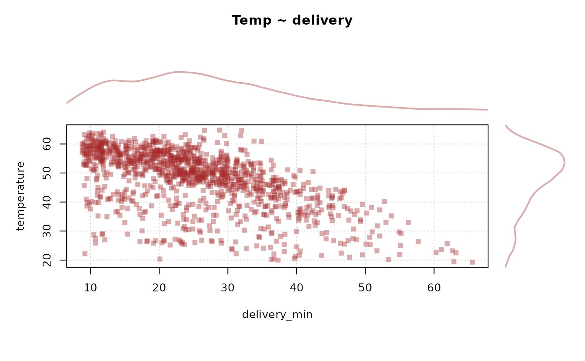
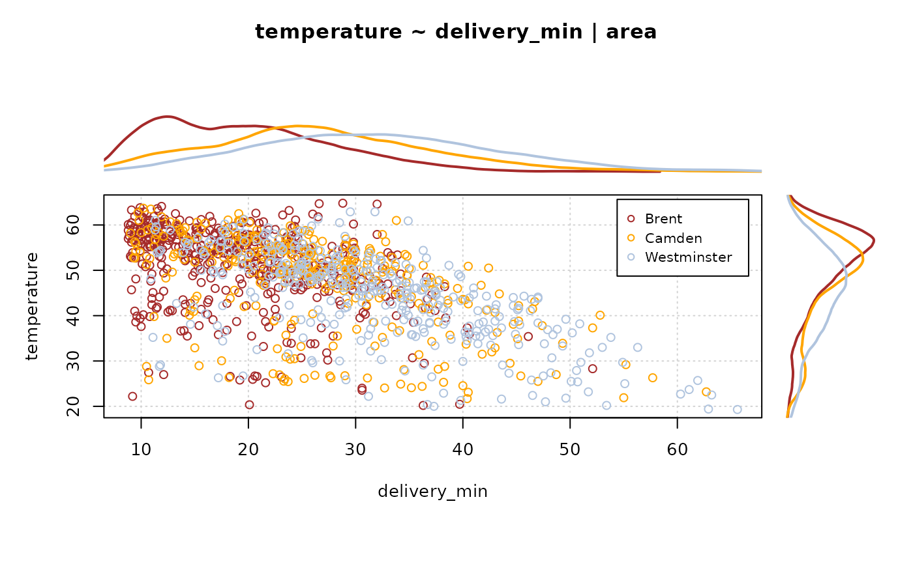

PlotMarDens.RdDraw a scatter plot with marginal densities on the x- and y-axis. Groups can be defined by grp.
PlotMarDens(x, y, grp = 1, xlim = NULL, ylim = NULL, col = rainbow(nlevels(factor(grp))), mardens = c("all","x","y"), pch = 1, pch.cex = 1, main = "", na.rm = FALSE, args.legend = NULL, args.dens = NULL, ...)
| x | numeric vector of x values. |
|---|---|
| y | numeric vector of y values (of same length as x). |
| grp | grouping variable(s), typically factor(s), all of the same length as x. |
| xlim | the x limits of the plot. |
| ylim | the y limits of the plot. |
| col | the colors for lines and points. Uses |
| mardens | which marginal densities to plot. Can be set to either just x or y, or both ( |
| pch | a vector of plotting characters or symbols. |
| pch.cex | magnification to be used for plotting characters relative to the current setting of cex. |
| main | a main title for the plot, see also title. |
| na.rm | logical, should NAs be omitted? Defaults to |
| args.legend | list of additional arguments for the legend. |
| args.dens | list of additional arguments to be passed to |
| ... | further arguments are passed to the function |
Andri Signorell <andri@signorell.net>
# best seen with: x11(7.5, 4.7) # just one variable with marginal densities PlotMarDens( y=d.pizza$temperature, x=d.pizza$delivery_min, grp=1 , xlab="delivery_min", ylab="temperature", col=SetAlpha("brown", 0.4) , pch=15, lwd=3 , panel.first= grid(), args.legend=NA , main="Temp ~ delivery" )# use a group variable PlotMarDens( y=d.pizza$temperature, x=d.pizza$delivery_min, grp=d.pizza$area , xlab="delivery_min", ylab="temperature", col=c("brown","orange","lightsteelblue") , panel.first=list( grid() ) , main = "temperature ~ delivery_min | area" )